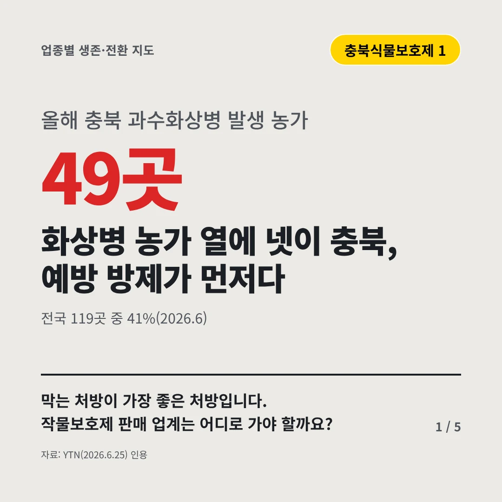
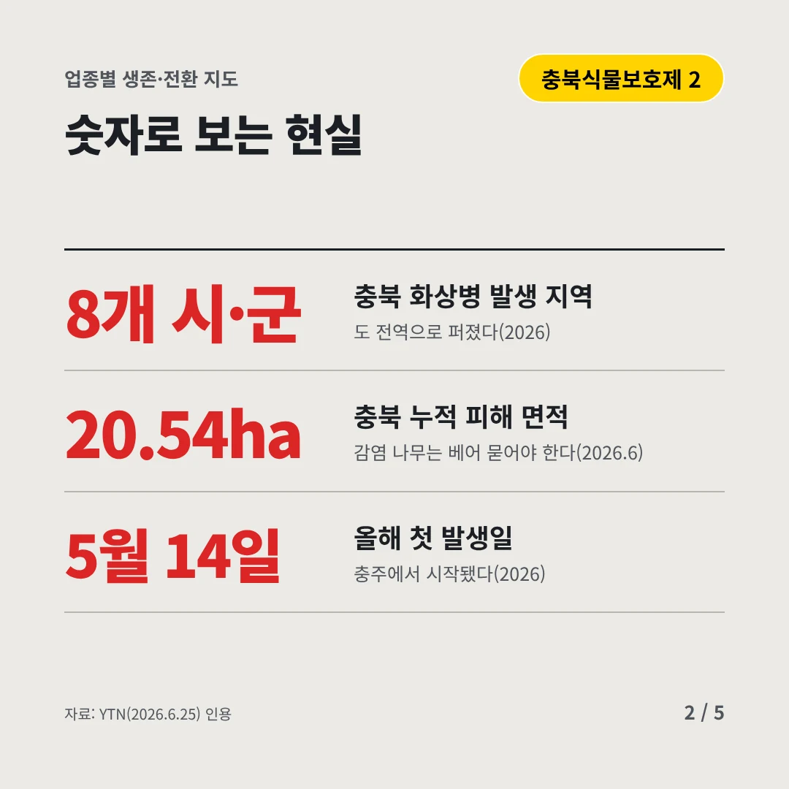
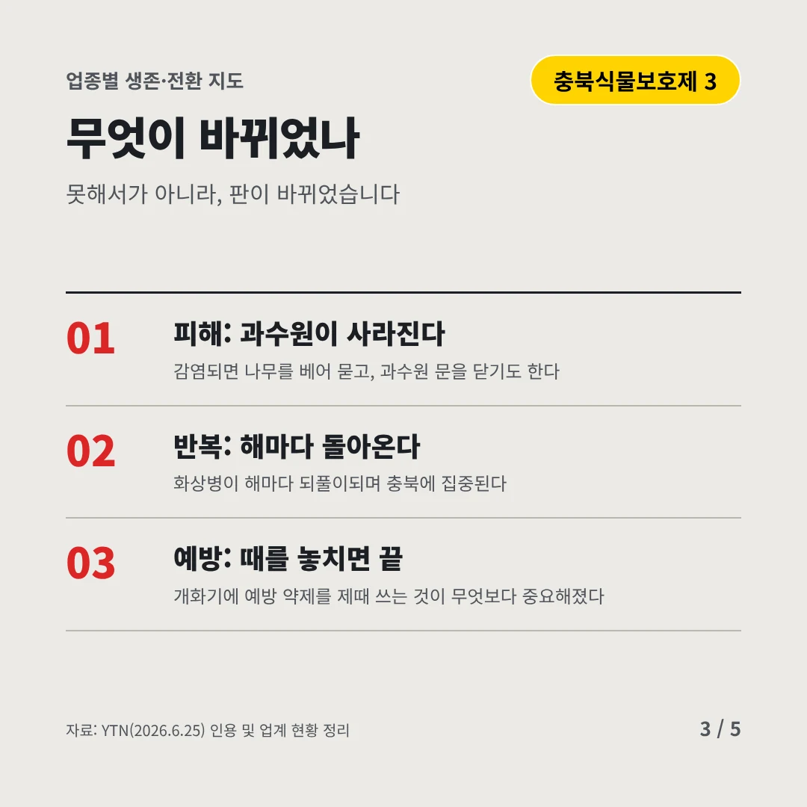
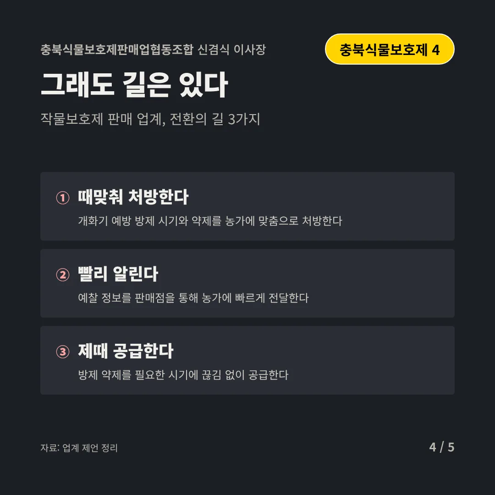
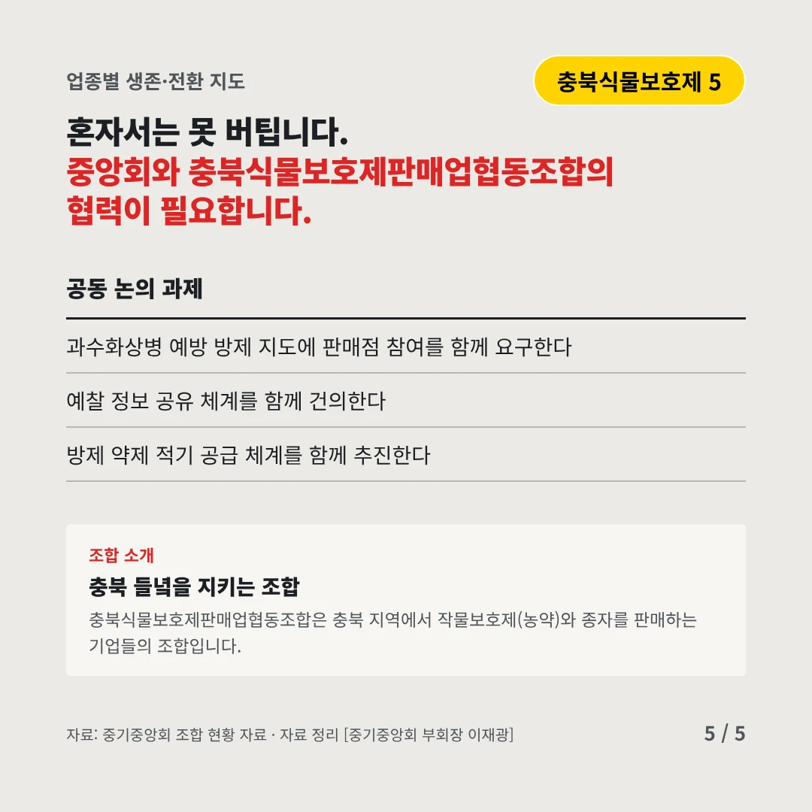
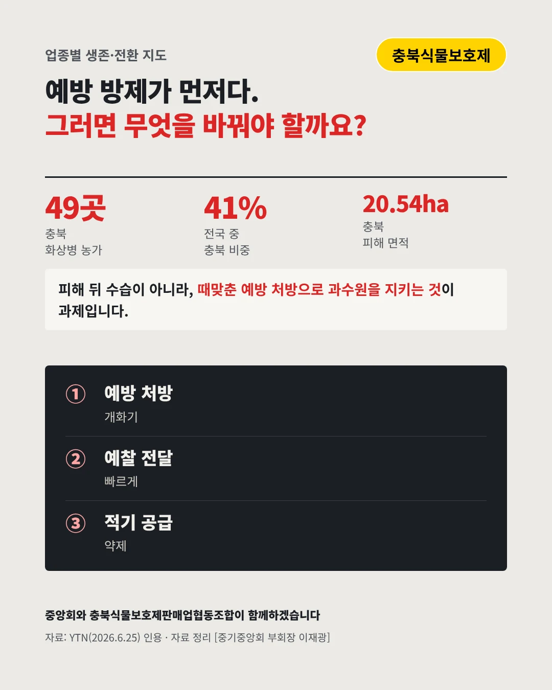

충북식물보호제판매업협동조합
화상병 농가 열에 넷이 충북, 예방 방제가 먼저다
49곳 올해 충북 과수화상병 발생 농가






막는 처방이 가장 좋은 처방입니다. 작물보호제 판매 업계는 어디로 가야 할까요?
숫자로 보는 현실
- 8개 시·군충북 화상병 발생 지역도 전역으로 퍼졌다(2026)
- 20.54ha충북 누적 피해 면적감염 나무는 베어 묻어야 한다(2026.6)
- 5월 14일올해 첫 발생일충주에서 시작됐다(2026)
무엇이 바뀌었나
- 피해: 과수원이 사라진다감염되면 나무를 베어 묻고, 과수원 문을 닫기도 한다
- 반복: 해마다 돌아온다화상병이 해마다 되풀이되며 충북에 집중된다
- 예방: 때를 놓치면 끝개화기에 예방 약제를 제때 쓰는 것이 무엇보다 중요해졌다
그래도 길은 있다
- 때맞춰 처방한다개화기 예방 방제 시기와 약제를 농가에 맞춤으로 처방한다
- 빨리 알린다예찰 정보를 판매점을 통해 농가에 빠르게 전달한다
- 제때 공급한다방제 약제를 필요한 시기에 끊김 없이 공급한다
한 장 요약

조합 소개
충북식물보호제판매업협동조합은 충북 지역에서 작물보호제(농약)와 종자를 판매하는 기업들의 조합입니다.
자료: YTN(2026.6.25)